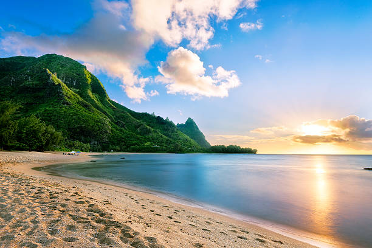

Hawaii 🌋

🏝️ Hawaii: L'Aloha Spirit e le Isole Vulcaniche L'arcipelago delle Hawaii, il 50° stato degli USA, è la culla dell'Aloha Spirit. Queste isole vulcaniche sono un capolavoro della natura, dove si possono esplorare vulcani attivi e dormienti come il Kilauea, fare surf sulle onde leggendarie di Waikiki e percorrere sentieri escursionistici che si aprono su panorami costieri drammatici, come la Na Pali Coast. La cultura locale, ricca di tradizioni Luau e danze Hula, completa un'esperienza unica che unisce avventura, storia e bellezza selvaggia.
- 🎾 Attività: trekking sui vulcani, surf, snorkeling, luau tradizionali
- 🍳 Cibo tipico: poke bowl, kalua pig, frutti tropicali come ananas e cocco
- ⭐ Luoghi iconici: Waikiki Beach, vulcano Haleakalā, Na Pali Coast